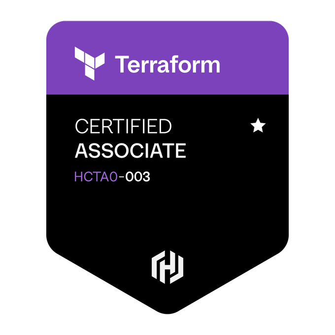
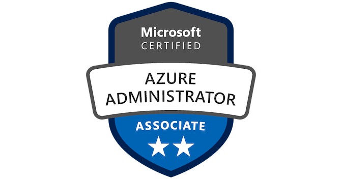
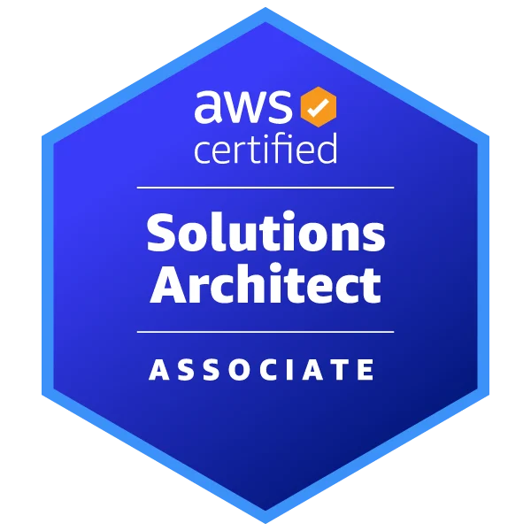

Platform engineering
Kubernetes platform design and administration across AKS and EKS, with standardized environments and reusable infrastructure.
Platform engineering · Cloud · DevOps
Platform Engineering Tech Lead
I build reliable cloud platforms that help engineering teams move with confidence. Over nine years, I’ve worked across Azure and AWS, Kubernetes infrastructure, CI/CD ecosystems, and developer enablement for enterprise healthcare, e-commerce, and mobile platforms.
Gurugram, Haryana, India
FOCUS Platform reliability Infrastructure as Code Developer enablement
LinkedInWhat I bring
Kubernetes platform design and administration across AKS and EKS, with standardized environments and reusable infrastructure.
Azure and AWS architecture, Terraform infrastructure as code, cloud cost optimization, and deployment automation.
GitHub Actions and Jenkins CI/CD, release engineering, Helm, ArgoCD, and dependable GitOps workflows.
Observability, incident response, production troubleshooting, technical mentorship, and cross-functional team leadership.
The journey so far
Nine years of building, improving, and operating the systems behind great products.
Publicis Sapient
Leading platform engineering initiatives for enterprise healthcare systems across development, QA, staging, and production environments.
TOOLS GitHub Actions · Kubernetes · AKS · Terraform · Azure · Helm · ArgoCD · Grafana · Prometheus
Rakuten India
Supported large-scale e-commerce platform infrastructure with a focus on Kubernetes reliability, automation, and observability.
Q3 Technologies
Designed cloud infrastructure and CI/CD solutions for enterprise healthcare platforms across AWS and Azure.
MySense Technologies
Built cloud-native infrastructure automation and backend deployment platforms across AWS and Azure.
Ranosys Technologies
Delivered DevOps transformation and CI/CD modernization for mobile application platforms.
Red Bull India
Selected work
A few examples of platform, automation, and cloud work across teams and industries.
Built Kubernetes delivery automation, managed AKS and Terraform provisioning, and enabled GitOps workflows for production.
GitHub Actions · Helm · ArgoCD · Prometheus · Grafana
Supported the In-App Messaging platform with production AKS, ingress and TLS automation, standardized deployment pipelines, and observability.
AKS · GitHub Actions · Prometheus · Grafana · Azure Monitor
Designed secure three-tier Azure architecture with high-availability services, Azure Database for MySQL, and IAM controls.
Azure · MySQL · IAM · Load balancing
Developed Bash automation and microservices-based deployment infrastructure for one-click CMS application deployments.
AWS · Azure · Docker · Nginx · Bash
Implemented Jenkins CI/CD pipelines for Java applications and managed highly available AWS infrastructure and application environments.
Jenkins · Java · AWS EC2 · Tomcat · PostgreSQL
The toolkit
Azure · AWS · AKS · EKS · EC2 · VPC · Azure Databricks · Azure Data Factory · RDS · S3
Kubernetes · Docker · Helm · Terraform · Ansible · GitHub Actions · Jenkins · ArgoCD · GitOps · CI/CD
Prometheus · Grafana · ELK Stack · Azure Monitor · CloudWatch · DevSecOps · IAM/RBAC · Key Vault
Python · Bash · Linux · Nginx · YAML · Git · Microservices · Configuration management
Technical leadership · Team management · Mentorship · Cross-functional collaboration · Production operations
Credentials

Terraform Associate
Azure Administrator
AWS Solutions ArchitectEducation
Bachelor of Technology
Rajasthan Technical University
Hindi — Native / English — Professional Working Proficiency
Have a platform challenge?